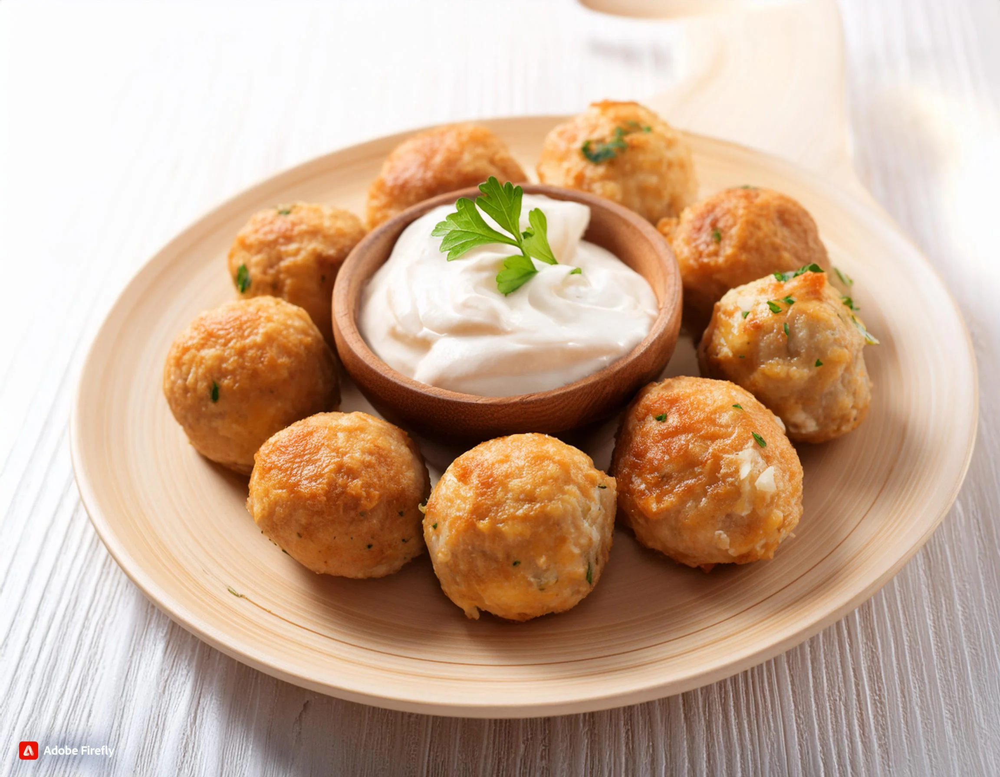

Carnes
Descubre recetas deliciosas y fáciles de preparar para tus platillos con carnes.
Inicio
Recetas Guardadas
Nosotros
Recetas Con Carnes
Salmón asado con lima fresca y salsa de jengibre
Gran Hamburguesa de carne de res Wagyu

Albóndigas de pollo con queso crema
Pasta cremosa de pollo y tocino
Arroz con pollo y verduras en una sola olla
Filete de Carne de Wagyu con Papas Fritas
Ensalada de Pollo Arcoíris con Almendras y Miel
Sándwich Picante de Barbacoa con Papas Fritas
Sopa de Ramen de Pollo con Champiñones